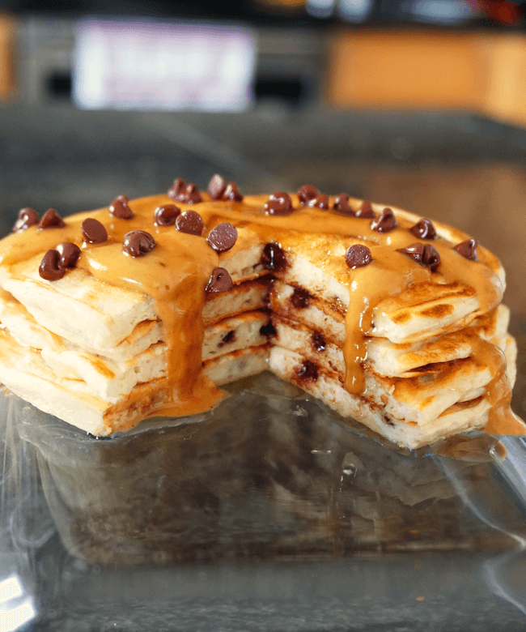

Protein Pancakes

Protein pancakes made from oat flour and a blend of whey and casein protein for a high protein breakfast option. You can prep the dry ingredients in advanced and have these ready to go quickly each morning.
Ingredients
- ¾ scoop (25 g) vanilla whey/casein blend (50/50)
- ¼ cup (20 g) oat flour
- 1 ⅓ tbsp (10 g) tapioca flour
- 1/4 tsp (1 g) baking powder
- ¼ cup (60 g) liquid egg whites
- ⅓ cup (75 g) plain nonfat Greek yogurt
- 1-2 tbsp (25 g) water
Instructions
- Mix all the dry ingredients together so no clumps are present.
- Add in the wet ingredients and mix thoroughly.
- Heat a griddle/skillet on medium heat and spray with oil. Add the batter and cook for a couple minutes, then flip.
Back to Recipe Index